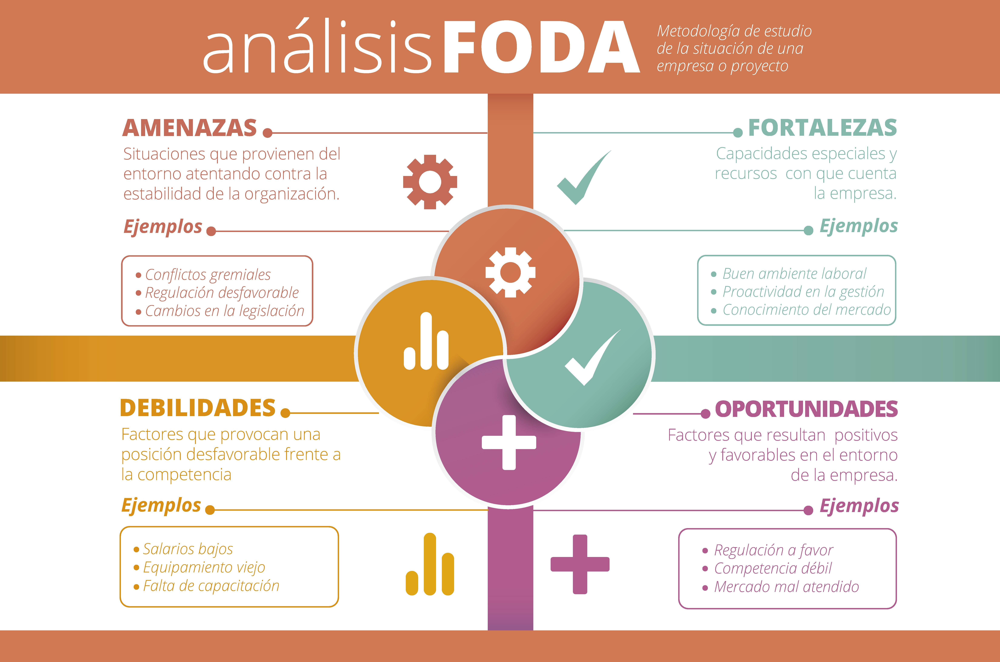
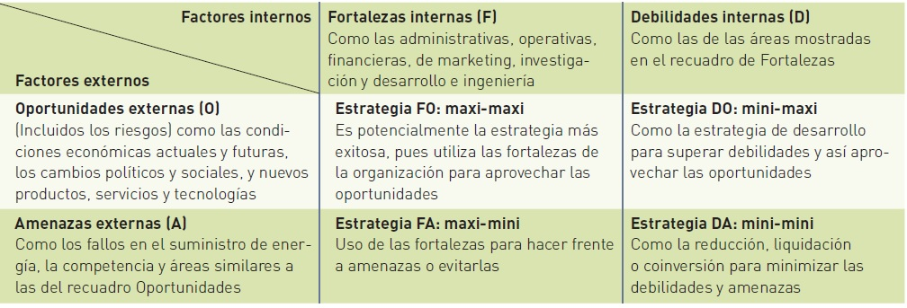

Análisis FODA
La sigla FODA, es un acróstico de Fortalezas (factores críticos positivos con los que se cuenta), Oportunidades, (aspectos positivos que podemos aprovechar utilizando nuestras fortalezas), Debilidades, (factores críticos negativos que se deben eliminar o reducir) y Amenazas, (aspectos negativos externos que podrían obstaculizar el logro de nuestros objetivos).
La matriz FODA es una herramienta de análisis que puede ser aplicada a cualquier situación, individuo, producto, empresa, etc, que esté actuando como objeto de estudio en un momento determinado del tiempo.

Estrategias
- La estrategia DA busca minimizar debilidades y amenazas; puede requerir que la compañía, por ejemplo, establezca una conversión, se reduzca o hasta se liquide.
- La estrategia DO intenta minimizar las debilidades y maximizar las oportunidades. Así, una empresa con debilidades en algunas áreas puede desarrollarlas desde el interior o adquirir las competencias necesarias (como tecnología o personas con las habilidades necesarias) en el exterior para aprovechar las oportunidades en el ambiente externo.
- La estrategia FA utiliza las fortalezas de la organización para ocuparse de las amenazas en el ambiente. La meta es maximizar a las primeras y minimizar a las segundas, por ejemplo una compañía puede usar sus fortalezas tecnológicas, financieras, gerenciales o de marketing para hacer frente a las amenazas de un nuevo producto introducido al mercado por su competidor.
- La estrategia FO capitaliza las fortalezas de una compañía para aprovechar las oportunidades, es la más deseable. Si tienen debilidades buscarán superarlas para convertirlas en fortalezas; si enfrentan amenazas lidiarán con ellas para poder enfocarse en las oportunidades.

Bibliografía
- Koontz H, Weihrich H, Cannice M. (2012). Administración una perspectiva global y empresarial. México: McGraw Hill.